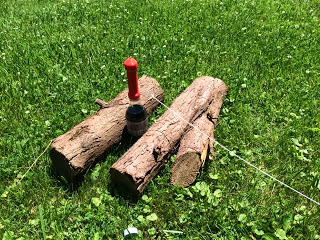
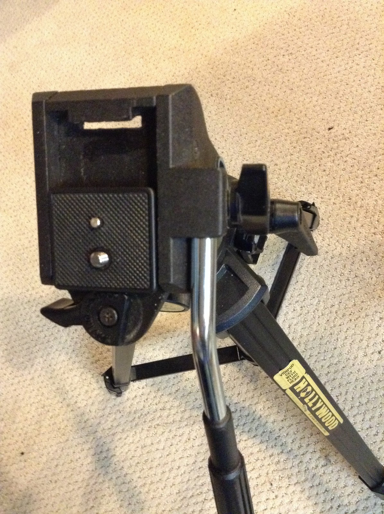
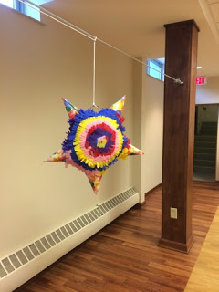
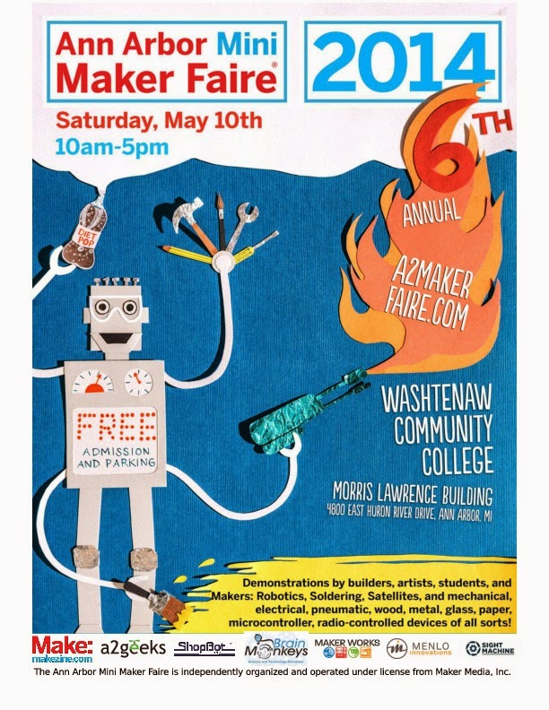
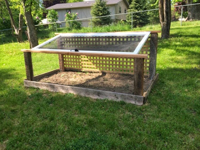
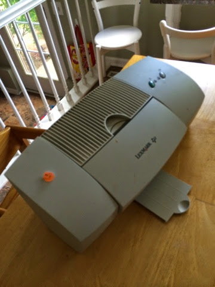
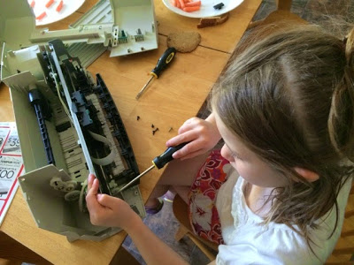
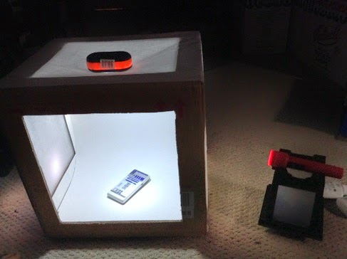
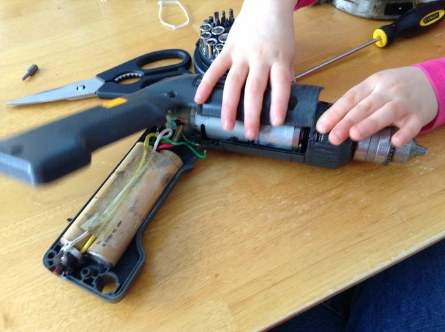

Diet Coke and Mentos

As any true geek dad, I have always wanted to do the Diet Coke and mentos experiment. However it is messy and the logistics of getting the mentos in the coke without getting crazy sticky is challenging. I did a quick search of thingiverse and found a couple of wonderful …
read moreTripod Quick release mount
I got a tripod for my birthday this year. It is a really nice one, but I lost the quick release mount. Here is a picture with a quick release mount from another tripod. Obviously, it doesn't fit:

After some shopping online this one looks fairly good, but possibly not …
read moreParty Piñata

I like to watch Curious George with my Kids. That little monkey is a bit of a maker. I really like the episodes where he tries to build things. In most cases he doesn't get his design right and has to debug and iterate on the design until he has …
read moreAnn Arbor Mini Maker Faire
A few weeks ago we caravanned a group of family and friends down to the Ann Arbor Mini Maker Faire.

It was everything I had hoped: there were plenty of robots, 3d manufacturing devices and other things to touch and play with. My oldest daughter (with help from her papa …
read moreGarden Fortress

I love the idea of gardening. Specifically vegetable gardens where we can grow, harvest and eat some of our food. I've had a few gardens before, but in our current house it is difficult to have one because our beautiful four legged neighbors (deer) like to snack in our yard …
read moreScavenging Parts
I found this printer at a garage sale for $2.

I like to find old mechanical/electrical devices and take them apart with my kids.

In addition to just having fun and learning how things work, we were able to salvage the stepper motors. I want to try hooking them …
read moreLight Box

In addition to making, I love to take pictures. Photography has been a passion of mine since I was my daughter's age. I remember one vacation in Lake Michigan with my family: my Aunt Pat gave me a 110 cartridge camera and basically just let me loose. I was hooked …
read moreReverse Making

I paid a visit to our university's surplus store. This is a wonderful place where the university can recycle and reuse some of its vast equipment and supplies. It turns out to be a big junk store. My goal was to find something useful that I could take apart with …
read more